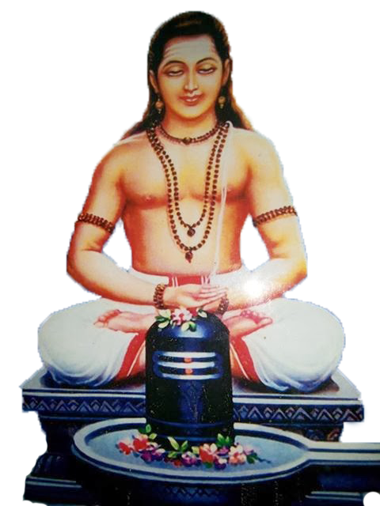

In a time when kingdoms rose and fell like waves upon the ocean, there lived a young prince named Devendra. Despite his wealth, power, and comfort, he was haunted by a single realization—that death would one day claim him, as it had claimed all mortals before him. This fear consumed his mind, turning even his greatest victories to dust in his heart.
One day, while wandering in the forest beyond the palace walls, Devendra encountered an old hermit meditating beneath an ancient tree. The hermit, sensing the prince's torment, revealed to him a great truth: "True immortality is not the extension of the mortal body, but the transcendence of the mortal mind. Seek out Gorakhnath, the great yogi. He alone knows the secrets of eternal life."
The Journey Begins
Driven by hope and determination, Devendra abandoned his throne and set out to find Gorakhnath. For months, he traveled through treacherous mountains, dense forests, and scorching deserts. Many times he was tempted to turn back, but his hunger for truth kept him moving forward. He encountered spiritual seekers, wandering monks, and wise ascetics who all pointed him in the direction of the great master.
Finally, after a year of arduous journey, Devendra reached the ashram of Gorakhnath, hidden high in the sacred mountains where the snow never melted and the air itself seemed to vibrate with divine energy.
The Teachings of the Master
Gorakhnath accepted Devendra as his disciple and began his training immediately. Not in what the prince expected. There were no magical rituals, no elixirs of immortality, no supernatural powers granted overnight. Instead, Gorakhnath taught the discipline of yoga, the mastery of breath, the control of the mind, and the principles of dharma and karma.
"You seek immortality of the body," Gorakhnath said to his student, "but the body is merely a temporary vessel. True immortality comes from understanding the eternal nature of the self, the Atman that exists beyond birth and death."
The young prince learned to meditate for hours, to feel the subtle energies flowing through his body, to merge his consciousness with the infinite. He practiced pranayama, asanas, and mantras, gradually transforming his physical form and mental state.
The Revelation
After years of devoted practice, during a deep meditation, Devendra experienced a profound revelation. He saw beyond the limitations of his individual consciousness, perceiving the vast eternal existence that pervades all things. He realized that he had never truly been born, nor would he ever truly die. The self within him was one with the cosmic consciousness, eternal and unchanging.
When Devendra opened his eyes, he was no longer the fear-stricken prince. He had become a realized being, free from the fear of death, radiating the peace of one who had attained true immortality. His physical form remained unchanged, yet his entire being had been transformed.
The Eternal Teaching
Devendra remained with Gorakhnath for the rest of his life, helping to guide other seekers on their spiritual paths. He learned that true immortality is not a destination to be reached, but a truth to be realized. It is the infinite consciousness that exists beyond time and space, beyond birth and death. This was the greatest teaching of Gorakhnath—that within each human being lies the eternal self, waiting to be discovered through discipline, meditation, and unwavering devotion to truth.